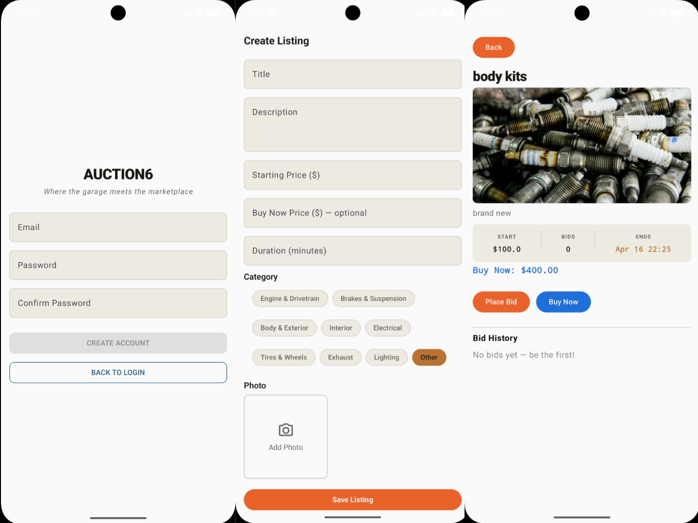

AUCTION 6ANDROID APPLICATION

Auction 6
An Android app for listing, bidding on, and buying car parts. Built with Kotlin, Jetpack Compose, and Room.
Bruno De Souza / Software Developer
I’m a Computer Science student at UT Arlington. I build Android applications, Java games, and websites.
01 / Work
Android, Java, and web development

An Android app for listing, bidding on, and buying car parts. Built with Kotlin, Jetpack Compose, and Room.
A recreation of the classic Robots game in Java, with turn-based movement and a Swing desktop interface.
A command-line social platform in Java, with accounts, threaded posts, private messages, and account controls.
This portfolio. A responsive static site with project filtering, light and dark themes, and a canvas rhythm game.
02 / About
Computer Science · Expected May 2027
I study Computer Science at the University of Texas at Arlington, with an expected graduation in May 2027.
My coursework and personal projects cover Android development, desktop applications, and the web. I’m particularly interested in data modeling and object-oriented design.
Recently, I’ve been working with Kotlin and Jetpack Compose for Android, and Java for games and command-line tools.
View résuméJava, Kotlin, C, C++, Python, JavaScript
Android Studio, Git & GitHub, Java Swing, SQLite
Object-oriented design, data structures, algorithms, Agile development
Side project
Built with JavaScript and canvas. Use A, S, D, F or tap to play.